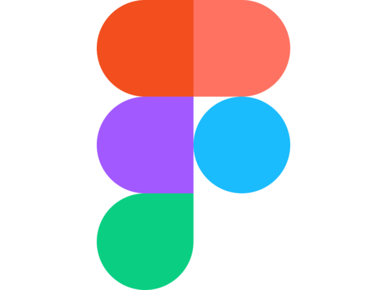

Хеллоу!
Мене звати Айшен Ібрагімова,
я починаючий графічний дизайнер.
“Що мені робити в житті? Що я вмію взагалі? Що мені подобається?”
Поки я точно не можу відповісти на це питання, але я точно знаю, що на даний момент дизайнування являється моїм основним захопленням, та я отримую від цього задоволення, а що може бути краще, ніж кайфувати від того, що робиш?
Я перетнула половину шляху як студента, дізналась багато з теоретичної та практичної сторони графічного дизайну, і тепер я хочу продовжувати дізнаватись більше.

3 роки експіріенсу в цьому графічному редакторі... Найбільше часу проводжу саме тут, тому вважаю що тут мій скілл 9/10, все таки неможливо знати все-все. Моя любов навіки :)
З цим редакотором я знайома менше року, але він зручний для вивчення веб-дизайну, отже я повинна знати як тут все працює. Скілл 7/10
Даний редактор - недавнє моє відкриття. Він допомагає мені верстати книгу і дуже зручний. Раніше з ним в мене були трабли, але зараз все супер-пупер. Ставлю собі 8/10.
Філ фрі ту текст мі